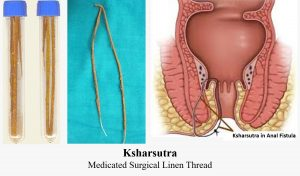
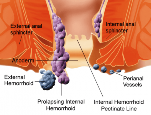

What is Ksharsutra Treatment for Piles?
The doctors understand that often the patients are uncomfortable discussing anal diseases like pilonidal sinus.Many of us keep suffering until the pain gets severe and unbearable.A few have seen recurrence even after surgical treatment.Apart from home and surgical treatments for piles, Ksharsutra is another technique to treat piles, an ayurvedic procedure that is safe and cost-effective to treat Anorectal disorders.It is less invasive and commonly used for treating diseases such as pile, fissure, and anal fistula.
It is a medicated alkaline thread prepared by using plant-based ingredients.It takes a short time to cure and the patients are discharged most probably the same day.The chances of recurrence are very few in this process.
Well, Ksharsutra treatment is good but a few of us are not eligible to undergo this treatment.The centers for Ksharsutra treatment in Pune do not suggest pregnant women, people suffering from hepatitis, rectal cancer, and leprosy to opt for this treatment.
What is the Ksharsutra treatment process for piles?
Ksharsutra treatment is not essential for all piles.Most of the piles and fissures can be through ayurvedic medicines.Ksharsutra treatment is used to cure the cases in advanced stages.Before learning Ksharsutra treatment for fistula and piles, let us gain knowledge about how Kshar sutra is prepared.
Kshar sutra treatment for piles
The patient is first given local anesthesia.The base of the piles is tied up with Kshar sutra using a surgical method.A pack dipped in Yashtimadhu is inserted inside the rectum to reduce the irritation that may occur due to Kshar sutra.The medicated caustic thread then strangulates the blood vessels.A new one within a week replaces the Kshar sutra.With this method, the pilonidal sinus is gradually cut and the wound heals within 15 days.
Kshar sutra treatment for fistula
The patient must be either on local or general anesthesia while in treatment.A malleable probe is passed via an outer opening of the fistula and needs to reach the internal opening in the anal canal.Then the probe is pulled out through anal opening along with a Kshar sutra.It takes two-three weeks to heal the wound.The Kshar sutra needs to replace within a week with a new one.
Benefits of Kshar sutra treatment
Over surgical treatment to cure piles and fistula, people nowadays opt for Kshar sutra.Kshar sutra is an ayurvedic treatment and very much effective.A few listed benefits are:
On a conclusive note
With the growing cases of piles, surgical treatment is getting costly.Kshar sutra is a simple and para surgical procedure and cost-effective.In addition, the patients are cured within a short time bearing negligible pain and very few chances of recurrence.
[bsa_pro_ad_space id=4]
Share on Facebook Tweet Follow us
Posted On: 2020-07-26T00:00:00
Posted By: Jaden Smith




Content Date: 2020-07-26
Download Date: 2021-07-09
Document ID: L0C04DWI9